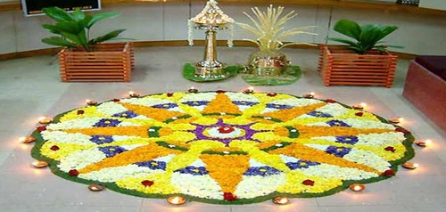

i<html>
    <head>
        <meta charset="utf-8">
        <title>Onam Wishes-VR</title>
        <meta name="description" content="VR">
         <script src="https://aframe.io/releases/0.5.0/aframe.min.js"></script>
    </head>
    <body>
        <a-scene auto-enter-vr>
            <a-assets>
                
                
                
               
                </a-assets>	

            <a-entity>
                <a-entity camera look-controls wasd-controls>
                    <a-entity position="0 1 -2" scale="0.2 0.2 0.2" geometry="primitive: ring; radiusOuter: 0.20; radiusInner: 0.13;" material="color: #ADD8E6; shader: flat" cursor="maxDistance: 30; fuse: true">
                        <a-animation begin="click" easing="ease-in" attribute="scale" fill="backwards" from="0.1 0.1 0.1" to="1 1 1" dur="150"></a-animation>
                        <a-animation begin="fusing" easing="ease-in" attribute="scale" fill="forwards" from="1 1 1" to="0.2 0.2 0.2" dur="1500"></a-animation>
                    </a-entity>
                </a-entity>
            </a-entity>

            <a-curvedimage id="ho1" src="#home1" transparent="true" 
              height="2" radius="3" theta-length="40" rotation="0 250 0" position="0 0 -2">
            </a-curvedimage>

            <a-curvedimage id="ho" src="#home" transparent="true" 
              height="2" radius="3" theta-length="40" rotation="0 200 0" position="0 0 -2">
            </a-curvedimage>
            

            <a-curvedimage id="ho3" src="#home3" transparent="true" 
              height="2" radius="3" theta-length="40" rotation="0  150 0" position="0 0 -2">
            </a-curvedimage>
            

          <a-light type="directional" color="#fff" intensity="0.2" position="-1 2 1"></a-light>
          <a-light type="ambient" color="#fff"></a-light>
          <a-sky src="onamm.jpg"></a-sky>
        </a-scene>
        <script>
            AFRAME.registerComponent('auto-enter-vr', {
             init: function () {
              this.el.sceneEl.enterVR();
             }
            });
            
            document.querySelector("#ho1").addEventListener('click', function() {
                window.location.href = "onam/athapoo_kolam/final1.html";
            });
            document.querySelector("#ho").addEventListener('click', function() {
                window.location.href = "onam/surya_pongal/index.html";
            });
            document.querySelector("#ho3").addEventListener('click', function() {
                window.location.href = "onam/mattu_pongal/index.html";
            });
            
        </script>
    </body>
</html>
